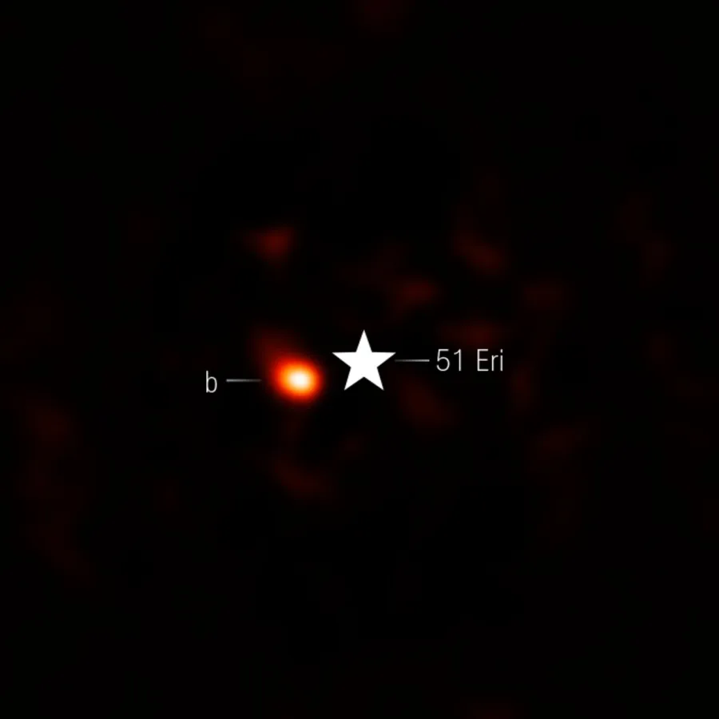

17. März 2025
Webb bildet 51 Eridani b ab und findet Kohlendioxid
Die Nahinfrarotkamera NIRCam des James-Webb-Weltraumteleskops hat den jungen Exoplaneten 51 Eridani b direkt abgebildet. Ein Koronograf blendet das Sternlicht aus; im Bild markiert ein Sternsymbol die Position von 51 Eridani, der Planet erscheint als roter Fleck links daneben (Licht bei 4,1 Mikrometern).
Die Beobachtungen zeigen, dass der Planet reich an Kohlendioxid ist. Das gilt als starker Hinweis darauf, dass er wie Jupiter und Saturn entstand: durch den langsamen Aufbau eines festen Kerns, der Gas anzog. Der Planet ist 17,7 Milliarden Kilometer von seinem Stern entfernt; das System liegt 96 Lichtjahre von der Erde.
Quellen: ESA/Webb: "Webb images young, giant exoplanets, detects carbon dioxide" (weic2504)., 17.03.2025; ESA/Webb: "51 Eri b (NIRcam image)" (image weic2504b)., 17.03.2025